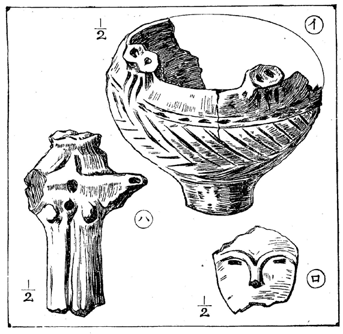
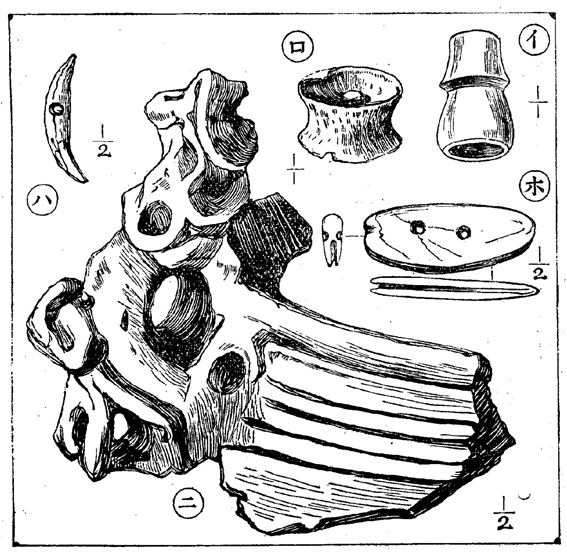

――初めての發掘――權現臺の歴史――貝層より石棒――把手にあらで土偶――元日の初掘り――朱の模樣ある土器――奇談――珍品――地主と駄菓子――鷄屋の跡――
太古遺跡の
發掘に、
初めて
余が
手を
下したのは、
武藏の
權現臺である。それは
余の
品川の
宅から
極めて
近い、
荏原郡大井の
小字の
事。
東海道線と
山の
手線と
合して
居る
鐵道線路の
右手の
臺地がそれで、
大井の
踏切から
行けば、
鐵道官舍の
裏から
畑中に
入るのである。
余は
併し
大概蛇窪の
踏切の
第二の
線を
越して、
直ぐと
土手に
登つて
行くのである。
初心の
發掘としては
此の
權現臺は
大成功であつた。
無論遺物が
豐富でも
有つたのだが、
宅から
近いので、
數々［＃ルビの「しば／″＼」はママ］行き
得られたのと、
人手が
多かつたのも
勝利の
原因であつた。
されば
余として、
終生忘るゝ
事の
出來ぬのは、この
權現臺の
遺跡で、
其所の
地を
踏む
時は
勿論、
遺物の
一片を
手にしても、
直ぐと
其當時を
思出すのである。
成功した
其時の
嬉しさも
思出でるが、
併し
多くは
其時一處に
行つた
友の、
死んだのや、
遠ざかつたのや、いろ／＼それを
懷出して、
時々變な
感情に
打たれもする。
三十五
年の九
月、
日は
忘れたが
初旬であつた。それが
權現臺最初の
發掘で、
其頃余の
宅は
陣屋横町に
在つて、
活東望蜀の二
子が
同住して
居た。
後に
玄川子も
來た。
文士相樸が
［＃「文士相樸が」はママ］盛んな
頃なので、
栗島狹衣氏が
殆ど
毎日の
樣に
來て
居たので、
狹衣子と
同じ
朝日新聞に
居る
水谷幻花氏も、
其縁で
遊びに
來出した。
今日は
天氣が
快いからとて、
幻花子が
先導で、
狹衣、
活東、
望蜀の三
子が、
鍬を
擔いで
權現臺に
先發した。
後から
余も
行つて
見ると、
養鷄所の
裏手の
萱原の
中を、四
人て
［＃「四人て」はママ］連りに
掘散らして
居る。なる
程貝塚とは
這んな
物だなと
初めて
余は
地中に
秘密あるを
知つた。
此時分の
發掘法といふのは、
幼稚なもので、幻花
子はハンマーでこつこつ
掘つて、
布呂敷で
貝殼を
渫ひ
出す
位ゐ。
二
回目には
矢張其人數で、
此方は

や、
鍬で
遣つて
見たが、
如何も
巧く
行かぬものだから、三
回目には
汐干の
時に
用ゐた
熊手（
小萬鍬）が四五
本有つたのを
持出した
處が、これが
非常に
有効であつたので、（
勿論先輩中、
既に
小萬鍬を
用ゐて
居た
人が
有つたさうだが、それは三
本爪の、
極めて
小なる
物）
前の
鍛冶屋に四
本刄の
大形のを
別誂へするなど、
大分乘氣に
成つて
來た。（
箕も
其頃から
遣ひ
出した）
といふのが、
幻花子が、
小魔石斧や
［＃「小魔石斧や」はママ］、
完全に
近い
土器などを
掘り
出したので、
余等の
發掘熱がそろ／＼
高度に
達しかけたからである。
休日毎に
誘ひに
來る
幻花子を
待つて
居られず。
今日は
望生、
翌日は
活子、
或は三
人揃つて
行く
間に、
土偶の
足も
出る。
小土器も
出る。
大分景氣が
附いて
來た。
並んで
掘つて
居る
望生の
膝頭が
泥に
埋つて
居るのを、
狹衣子が
完全な
土器と
間違へて
掘出さうとすると、ピヨイと
望生が
起上つたので、
土器に
羽根が
生えたかと
驚いたのも
其頃。
活東子がゴホン／＼
咳をしながら、
赤土の
下まで
掘入つて、
何も
出ないと
零したのも
其頃。
初心［＃ルビの「しよしん」は底本では「しよしよ」］の
失策は
决して
少くなかつたのだ。
幻花子は
此當時、ぐツと
先生振つて、
掘りながら
種々講釋を
聞かせるのであつた。
余等が
最も
興味を
有して
傾聽したのは、
權現臺貝塚の
歴史であつて、
最初に
野中完一
氏が
發見したのを、
氏は
深く
秘して
居たので、
其頃は
發掘をせずとも、
表面をチヨイ／＼
掻廻して
見れば、
土偶、
土版、
完全に
近い
土器など、ごろ／＼
轉がり
出し、
磨製石斧などは、いくらでも
有つた。それを
幻花子がチラと
耳に
挾んで、
大井村中殘らず
探して、
漸く
野中氏の
寶庫を
突留めると
間もなく、
貝塚の一
部を
開いて
其所に
養鷄場を
設立する
大工事が
起り、
此期を
利用して
土方を
買收し、
幻花子が
種々の
珍品を
手に
入れた
事から、
地主との
衝突奇談、
小作人との
大喧嘩［＃ルビの「おほけんぐわ」はママ］、
小南保之助氏と
貝塚の
奇遇談やら、
足立博士の
未だ
學士時代に
此所へ
來て
蜂に
螫された
話やら、
却々面白い。
但し
斯ういふ
話の
出た
時は、
餘り
遺物の
出ない
時で、
土器の
顏でも
貝層から
出やうものなら、
呼吸をするのさへ
忘れる
位。
活東子が十
月卅一
日に
鐵鉢形の
小土器を
掘當てながら、
過つてそれを
破つたので、
破鐵鉢の
綽號を
取りなどしたが、それと
同時に
出した
把手附の
小土器は、
少し
缺げては
［＃「缺げては」はママ］居るが
珍形で、
優物たるを
失はぬ。（第壹圖
イ參照）

第壹圖（武藏權現臺）
イ（土器） ロ（土偶顏面） ハ（土偶胴部）
斯うして
殆ど
毎日の
如く
掘つて
居る
間に、
萱原を三
間幅で十
間ばかり、
南から
北まで
掘進んで、
畑の
方まで
突拔けて
了つた。（
高抔形［＃「高抔形」はママ］、
茶椀形［＃ルビの「ちかわんがた」はママ］、
土瓶形、
大小土器十
餘種。
石劒片、
石槍、
貝輪、
輕石製浮標等出づ）
これは
大變と、
總掛りで
地ならしをして、
今度は
又思ひ
思ひに
陣を
取り、
西から
東に
向つて
坑道を
進め
掛けた。
此間にチヨイ／＼
飛入の
發掘者が
見えた。
野中完一氏、
伊坂梅雪氏、
小南保之助氏、
高橋佛骨氏等。
十二
月の四
日であつた。
余と
幻花子と二
騎、
轡を
並べて
掘つて
居ると。
『
江見クン、
出た／＼』と
幻子が
變な
聲を
出した。
何が
出たかと
覗いて
見ると、
眞白［＃ルビの「まつしつ」はママ］い
貝層の
中から、
緑泥片岩の
石棒の
頭部が
見え
出して
居る。
それが
横一
文字に
貝層の
間に
挾まつて
居るのを。
『
未だ
有る、
未だ
有る』と
幻子は
調子を
取りながら
掘つて
行くので、
見て
居るに
耐えぬ。
殘念でならぬので、
自分の
持場を一
生懸命に
掘つたけれど、
何も
出ない。
幻子の
大成功に
引替へて
大失敗。
活望二
子も
茫然として
了つた。
其翌五日、
奮然として
余は
唯一人で
行［＃ルビの「ゆ」はママ］つた。
寒い
風が
吹き、
空の
曇つた、
厭［＃ルビの「いや」は底本では「いな」］な
日であつたが、
一人で一
生懸命に
掘つたけれど、
何も
出て
來ぬ。
晩まで
掛つて
漸く
土器の
端でも
磨つたらしい
石と、
把手の
平凡なのを二三
箇得たばかり。がツかりして
歸つて、
食卓につきながら、
把手の
一箇を
家人に
示して、これが
責めて
土偶の
顏でも
有つたら、
昨日の
敗軍を
盛返へすものをとつぶやくと、
脇で
見て
居た
母が『おや／＼それは
人形の
顏ではなかつたのか』といふ。『へえ、
人形の
顏だと
好いのですが、
然うではないのです』と
余は
答へた。
母は
重ねて『でも
妾には
人形の
顏に
見える』
余『
然うですな、これが
眉毛で、これの
下に
眼があると
好いのですが』と
言ひつゝ、
小揚子で
［＃「小揚子で」はママ］ツヽくと、
土が、ポロリと
落ちて、
兩眼が
開いた。おや／＼と
思ひながら、
又ツヽくと、
鼻の
孔さへ二ツ
開いた。
正しく
土偶の
顏面なのであつた。（第壹圖
ロ參照）
それから
又調子附いて、
雪中雨中構ひ
無しに
掘つて、三十五
年の十二
月三十
日、
棹尾の
成功としては
望蜀生が、
第貳圖ロの
如き
口唇具を
出した。
朱塗である。
最も
振つて
居たのは三十六
年一
月元旦で、
此日年始に
來た
幻花子は、
掘初めをすると
云つて
唯一人で
出掛けたのを、
後から、
靜灣、
佳水、
天仙、
望蜀、
古閑、
狹衣、
活東の七
人と
評議の
上、
二人宛四
方から
進んで、
穴に
籠る
幻子を
包圍攻撃して
遣らうといふので、それ／＼に
［＃「それ／＼に」はママ］手配りしたが、
活東子が
不間を
遣つて、
却つて
幻花子の
方から
突貫し
來つたのであつた。
其時の八
人の
内で、
活東天仙古閑の三
子は、
今は
現世の
人であらぬ。
三十六
年に
入つて
余は
大成功をした。一
月十六
日には、
土器に
朱を
以て
緻密なる
模樣を
畫いてあるのを、
二箇まで
掘出した。それから四十二
年の
今日までに
斯くの
如き
珍品は
又と
出でずに
居る。
余が
藏品中の
第一
位を
占めて、
未だ一
歩も
下らずに
居る。
それから、
土器も
種々出た。
奇談も
種々有つた。
貝をさらひ
出すのに
就て、
活東子と
幻花子と
衝突する。
發掘の
進路に
就て
衝突する。
狹衣子が
手傳ひに
來ては、つい、
社に
出る
時間を
忘れた
事や、
佛骨子が
穴の
中で
午睡をした
事や、これ
等は
奇談の
主なるもの。
發掘品としては三十六
年三
月十九
日に、
活東子が
方形裏模樣の
土器を
出し、
望蜀生が、
同二
月二十二
日に
壺形土器を
出し、
玄川子が
土偶の
足と、
第二圖ニの
如き、
珍らしく
複雜なる
把手を
出し。
余が
又土偶の
足、
半磨石斧、三
月二十二
日に
獸牙製曲玉の一
種、
略してキバマガ（第二圖
ハ參照）を
出し、
同月二十六
日に、
鹿角製浮袋の
口（第二圖
イ參照）を
出し、四
月三
日に
土偶胴部（第壹圖
ハ參照）を
出した
等が
主なる
物。

第貮圖（武藏權現臺）］
イ（浮袋口） ロ（口唇具） ハ（牙曲玉） ニ（把手） ホ（有孔石器）
此間に
望蜀生は
故郷に
歸り、
活東子又振はず。
幻花子は
相變らず。それと
玄川子を
相手にぼつ／＼
掘つて、
到頭鷄屋の
塀の
下まで
掘り
進んで、
夏の
頃には
既う
手の
附け
場所が
無くなつた。
思出して
見ると
未だ
奇談があつた。
母や
妻や
親類の
子供や、
女中や、
遠くも
無いので
摘草かた／＼
［＃「かた／＼」はママ］見物に
來た
事が
有つた。
其時は
生憎何も
出ないので、
採集袋へ
摘草を
入れて
歸つた
事もあつた。
最も
奇談とすべきは
地主の
某氏が
來た
時である。とは
知らぬので
貝を
揚げるのに
邪魔だから、
其所を
退いて
呉れなんて
威張り
散らして、
後で
地主と
分つて、
有合せの
駄菓子を
出して、
機嫌を
取つた
事などである。
やがて
其秋には、
殘らず
貝塚は
開かれて、
畑と
成つて
了つたが、それでも
余等は
未練［＃ルビの「みれい」はママ］に
引かされて、
表面採集に
時々立寄るが、
其後とても、
土偶を
得、
磨石斧を
得、三十七
年の九
月には、
第二
圖ホの
如き
有孔石器をさへ
表面で
得た。これは
曲玉の一
種でもあらう。
これだけ
荒した
權現臺は、
其後幾變遷して、
以前の
樣は
既う
見られぬ。四十一
年の
夏行つて
見ると、
彼の
鷄屋さへ
失くなつて
了つて
居る。
幻花子は
鷄屋の
出來ぬ
前から
知つて
居るのだ。
余が
知つてからも三四
代主人が
變つたのであつた。
二
代目の
時代の
鷄屋の
番人に
好い
老人が
居て、いろ／＼
世話をして
茶など
入れて
呉れて
居たが、
其老人間もなく
死んだので、
何んとなく
余は
寂寞を
感じたのであつた。それから三
代目四
代目とは、
無關係で、
構内へは一
歩も
足を
踏入れなかつたが、
到頭その
鷄屋は
亡びて
了つたので、これを
幸ひと
佛骨子をかたらひ、
又少し
掘つて
見た。それでも
土器が
一ツ、
磨石斧が一
本出た。
此後權現臺は
如何變るだらう。
初めて
萱原に
分入つた
時に
居た
活東子は
死んだ。
望蜀生は
如何したのか、
寄りつきも
仕ない。
狹衣子は
役者に
成つて、あの
泥を
渫つた
手でお
白粉［＃ルビの「しろしい」はママ］を
解きつゝあり。
幻花子も
新聞の
方が
忙しいので、
滅多に
來ず。
自分一人で
時々掘り
始めの
處へ
立つては、
往事を
追懷すると、
其時の
情景が
眼前に
彷彿として
見えるのである。が――
既う
直きに
其處は
人の
屋敷内にでもなつて、
垣から
覗く
事も
出來なくなるだらう。
纔かに五六
年で
地上は
此變化である。
地中の
秘密はそれでも、三千
餘年の
間保たれたと
思ふと、これを
攪亂［＃ルビの「くわんらん」はママ］した
余等は、
確かに
罪惡であると
考へずには
居られぬのである。